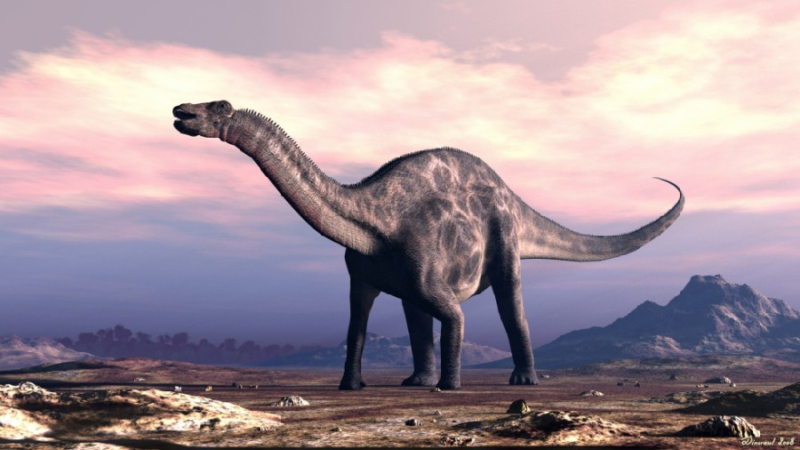

Camarasaurus (gr. "lagarto de cámaras") es un género con tres especies conocidas de dinosaurios saurópodos camarasáuridos que vivieron a finales del período Jurásico, hace aproximadamente 155 y 144 millones de años, en el Kimmeridgiense y el Titoniense, en lo que hoy es Norteamérica. Su nombre se refiere a los huecos en las vértebras y proviene del griego καμαρα/kamara que significa "cámara", o cualquier cosa con una cubierta arqueada, y σαυρος/sauros que significa "lagarto". Era un dinosaurio cuadrúpedo y herbívoro, el más común de los saurópodos gigantes encontrado en la Formación Morrison. Esta formación, a lo largo del flanco este de las Montañas Rocallosas, es un sitio rico en fósiles de las últimas etapas Jurásicas. Una gran cantidad de especies de dinosaurios se pueden encontrar allí, incluyendo los parientes del Camarasaurus como Diplodocus, Apatosaurus y Brachiosaurus. Sin embargo, los Camarasaurus son los más abundantes de todos los dinosaurios en la formación. Ha habido un gran número de esqueletos completos recuperados en Colorado, Nuevo México, Utah y Wyoming. Las tres especies consideradas válidas son Camarasaurus supremus, Camarasaurus grandis y Camarasaurus lentus.
Los huesos de este gran herbívoro eran mucho más gruesos que los del Diplodocus, por lo que era más pesado a pesar de tener cámaras que reducían el peso de la columna vertebral. Camarasaurus probablemente no podía pararse en sus patas traseras ya que los huesos más gruesos y las grandes extremidades delanteras indicaban que la parte frontal del cuerpo era demasiado pesada para poder levantarla del suelo. Camarasaurus se encuentra entre los dinosaurios saurópodos más comunes y frecuentemente bien conservados. El tamaño máximo de la especie más común, C. lentus, era de unos 15 metros de longitud. La especie más grande, C. supremus, alcanzó una longitud máxima de 23 metros y un peso máximo estimado de 47 toneladas.1
El cráneo arqueado de Camarasaurus era notablemente cuadrado y el hocico embotado tenía muchas fenestras, aunque era robusto y es recuperado con frecuencia en buenas condiciones por los paleontólogos. Los dientes de 19 centímetros de largo tenían forma de cinceles y estaban colocados uniformemente a lo largo de la quijada. La fuerza de los dientes indica que Camarasaurus comió probablemente un material vegetal más duro que los diplodócidos de dientes delgados. Vivía en bosques de coníferas abiertos donde se encontraban por doquier plantas alimenticias duras. Anteriormente, los científicos han sugerido que Camarasaurus y otros saurópodos pueden haber tragado gastrolitos, piedras, para ayudar a triturar los alimentos en el estómago, regurgitándolos cuando se volvían demasiado lisos. Un análisis más reciente, sin embargo, de la evidencia de las piedras del estómago sugiere que este no fue el caso. Los dientes fuertes y robustos de Camarasaurus estaban más desarrollados que los de la mayoría de los saurópodos y eran reemplazados en promedio cada 62 días,3 lo que indica que Camarasaurus pudo masticar los alimentos en su boca hasta cierto grado antes de tragar.4 Otros hallazgos indican que Camarasaurus prefería vegetación diferente de la de otros saurópodos, Permitiéndoles compartir el mismo hábitat sin competir.5 Un espécimen de Camarasaurus llamado SMA 0002, que también ha sido asignado a Cathetosaurus de la cantera Howe-Stephens de Wyoming, conocida como "ET", muestra evidencia de tejido blando. A lo largo de la línea de la mandíbula, los restos osificados de lo que parecen haber sido las encías del animal se han recuperado, lo que indica que Camarasaurus tenía dientes profundos cubiertos por las encías, con sólo las puntas de las coronas sobresaliendo. Los dientes al momento de la muerte, eran empujados hacia afuera de sus alveolos mientras que las encias se retrajeron al secarse. Los exámenes de la muestra también indican que los dientes estaban cubiertos por duras escamas externas y posiblemente un pico de algún tipo, aunque esto no se sabe con certeza.6
Los primeros fósiles de Camarasaurus fueron hallados en Colorado, Estados Unidos, unas pocas vértebras dispersas fueron localizadas en Colorado , por Oramel W. Lucas. Fue nombrado por Edward Drinker Cope rápidamente en 1877.8 Más adelante durante la Guerra de los Huesos, Othniel Charles Marsh nombró al Morosaurus grandis,[1] Archivado el 5 de agosto de 2016 en Wayback Machine. pero, la mayoría de los paleontólogos lo consideran actualmente un sinónimo de Camarasaurus.9 Tales conflictos de nombres eran comunes entre los dos cazadores de dinosaurios rivales. Como "Morosaurus" Marsh propuso dos especies en 1889 “M. lentus” y “M. agilis”. “M. lentus” fue reasignada a C. lentus en 1914 por Mook10 “M.agilis” fue asignada por Johnson en 1931 a “Camarosaurus agilis”11 y a C agilis por Steel en 1970.12 No fue hasta 1925, el año en que Charles Gilmore encontró el primer esqueleto completo del Camarasaurus en Norteamérica. Sin embargo, era el esqueleto de un Camarasaurus joven, por lo que en muchas ilustraciones de ese tiempo se lo suele representar mucho más pequeño de lo que era realmente.
La especie tipo de Camarasaurus es la especie original de Cope, C. supremus, que significa "el lagarto de cámara más grande", nombrada en 1877. Otras especies descubiertas incluyen C. grandis, que significa gran lagarto de cámara, de 1877, C. lentus en 1889 y C. lewisi, originalmente descrito como un nuevo género Cathetosaurus, en 1988. C. supremo, como su nombre indica, es la especie más grande conocida de Camarasaurus y uno de los saurópodos más masivos conocidos de la Formación Morrison del jurásico tardío. Excepto por su enorme tamaño, era casi indistinguible de C. lentus. C. supremo no era el típico del género en su conjunto, y sólo se conoce a partir de las partes últimas y más altas de la formación. Ambos C. grandis y C. lentus eran más pequeños así como presentes en las etapas más tempranas de Morrison.
La evidencia estratigráfica sugiere que la secuencia cronológica se alineó con las diferencias físicas entre las tres especies y describe una progresión evolutiva dentro de la Formación Morrison. C. grandis es la especie más antigua y se produjo en las capas de roca más bajas de la Formación Morrison. C. lentus apareció más tarde, coexistiendo con C. grandis durante varios millones de años, posiblemente debido a diferentes nichos ecológicos como lo sugieren las diferencias en la anatomía espinal de las dos especies. En una etapa posterior, C. grandis desapareció del registro de las rocas, dejando solamente C. lentus. Posteriormente C. lentus también desapareció, al mismo tiempo C. supremus apareció en las capas superiores. Esta sucesión inmediata de especies, así como la similitud muy estrecha entre las dos, sugiere que C. supremus puede haber evolucionado directamente de C. lentus, representando una población de animales más grandes, que sobrevivió más tarde.14 La especie Camarasaurus lewisi fue originalmente nombrada como Cathetosaurus lewisi15 y más tarde sinonimizado con Camarasaurus, un análisis de 2013 dividió a los dos géneros nuevamente.
 |
 |
 |
 |
 |
 |